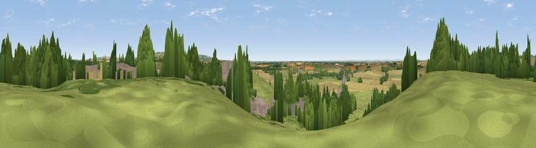

Viewpoint near Whitwell on-the-Hill
#16439 in England · top 32% of its area beats it · near Whitwell on-the-HillWhere it is
The exact computed spot (SE 72225 65575). Click the marker for map links.
The view, rendered

A 360° render of this exact spot computed from the terrain model, tree cover and land cover — summer colours, afternoon light, calibrated against photographs of famous viewpoints. Real trees, hedges and buildings will differ in detail.
The panorama
Grey silhouette: terrain skyline in each direction (720 bearings, Earth curvature and refraction included). Dashed green: skyline with trees (+15 m) and buildings (+8 m) as obstacles. Blue strip: how far the ground is visible on each bearing.
Where the view opens
Wedge length = distance to the farthest visible ground on that bearing (vegetation-aware). Rings at 10, 25 and 50 km.
What fills the view
42% grassland · 33% cropland · 19% woodland · 6% built-up
Angular shares of the visible panorama (visual magnitude), not map area. Landscape diversity 0.53 (0–1 Shannon).
Key numbers
More beautiful places nearby
The staircase of upgrades: each row has a higher view potential than everything closer. Driving times are estimates from straight-line distance, calibrated against real road routing — check an actual route before setting out.
| Place | Direction | Drive | Score |
|---|---|---|---|
| Viewpoint near Whitwell on-the-Hill | SSE · 0 km | ~1 min | 58.6 |
| Viewpoint near Bulmer | NW · 2 km | ~6 min | 60.8 |
| Viewpoint near Terrington | NW · 6 km | ~13 min | 65.8 |
| Viewpoint near Leavening | ESE · 8 km | ~16 min | 73.7 |
| Viewpoint near Acklam | ESE · 9 km | ~18 min | 73.8 |
| Viewpoint near Ampleforth | NW · 18 km | ~32 min | 76.6 |
| Viewpoint near Kilburn | NW · 26 km | ~42 min | 79.3 |
| Hood Hill | NW · 27 km | ~43 min | 79.6 |
54.08104, -0.89752 · source: screening · position refined by local search. Computed location — check access rights before visiting.